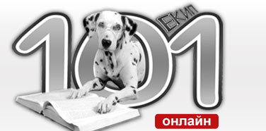

|  | |||
 |
 |
||
| начало | броеве | контакти |
| Час по етническа толерантност | |||
Обичаите и вярванията по нашите земи предизвикват интерес у малки и големи. Всички обичаме празниците и ритуалите. Спазваме традициите на своите деди, когато отбелязваме важните моменти от живота си. Даже и да не си признаваме, вярваме на гадания и на разни необясними и свръхестествени
вълшебства. Естествените ни нагласи са да обвързваме традициите си с етническата си принадлежност и религията. Позатворени в отделните народностни общности, забравяме, че в страната ни живеят представители на различни етноси. Представяте ли си да познавате не само “своите” семейни празници, обичаи и вярвания, а и тези на “другите”. Тогава ще откриете не само колко много си приличаме, как взаимно сме си влияли през годините на съжителството, но и ще намерим повече поводи за празници. В съвместната си работа нашият пъстър екип си поставя целта да проучи и разкаже за откритията си на страниците на изданието, което ви представяме сега. Вестникът се издава от клуб "Журналистика" към Общински детски център за култура и изкуство - Русе по проект “Час по етническа толерантност” финансиран от Център за образователна интеграция на децата и учениците от етническите малцинства по програма 4: Подпомагане процеса за превръщане на културното многообразие в източник и фактор за взаимно опознаване и духовно развитие на подрастващите и създаване на атмосфера на взаимно уважение, толерантност и разбирателство. |
|||
© 2008 Клуб "Журналистика". Всички права запазени. |
Всяко копиране, репродуциране или променяне на информацията в този сайт е забранено. |
Цитирането става само след съгласието на авторите и със задължително позоваване на източника. |